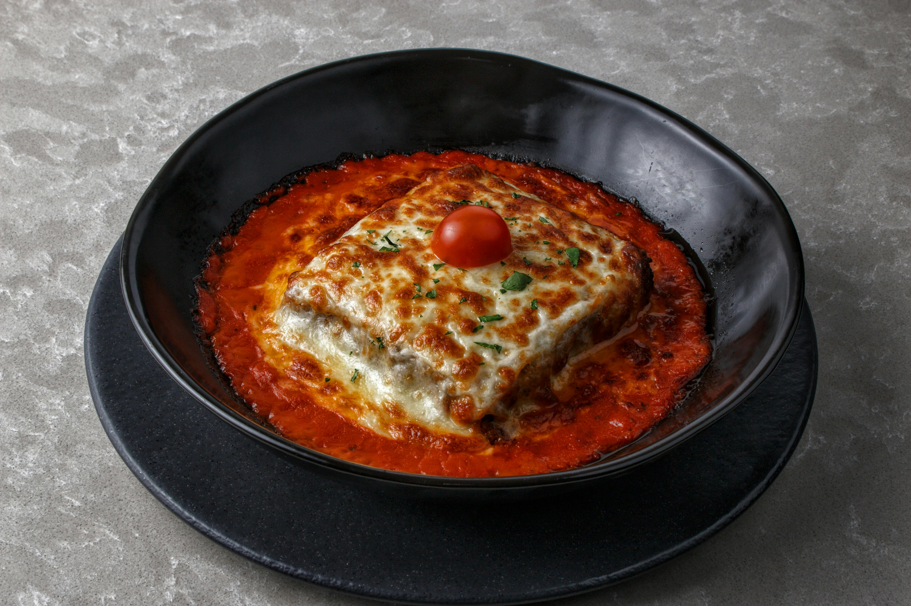

Lasagna

Description
Classic lasagna is a hearty, layered pasta dish made with rich meat sauce, creamy ricotta filling, and melted cheese baked to perfection. Each layer builds flavor, resulting in a comforting, satisfying meal that’s perfect for family dinners or leftovers throughout the week.
Ingredients
- 1 lb (450g) ground beef
- 1 small onion, diced
- 2 cloves garlic, minced
- 1 jar (24 oz) marinara sauce
- 1 teaspoon salt
- 1/2 teaspoon black pepper
- 1 teaspoon Italian seasoning
- 1 cup ricotta cheese
- 1 large egg
- 1/2 cup grated Parmesan cheese
- 1 teaspoon dried parsley (optional)
- 9 lasagna noodles (cooked according to package instructions)
- 2 cups shredded mozzarella cheese
Steps
- Prepare the Meat Sauce: In a large pan over medium heat, cook the ground beef until browned. Add diced onion and cook until softened. Stir in garlic and cook for about 30 seconds. Add marinara sauce, salt, pepper, and Italian seasoning. Simmer for 10–15 minutes.
- Make the Cheese Filling: In a bowl, mix ricotta cheese, egg, Parmesan, and parsley until well combined.
- Preheat the Oven: Preheat your oven to 375°F (190°C).
- Assemble the Lasagna: Spread a thin layer of meat sauce on the bottom of a baking dish. Add a layer of noodles, followed by ricotta mixture, meat sauce, and mozzarella cheese. Repeat layers (usually 3 total), finishing with sauce and mozzarella on top.
- Bake: Cover with foil and bake for 25 minutes. Remove foil and bake for an additional 15–20 minutes until the cheese is melted and bubbly.
- Rest and Serve: Let the lasagna rest for 10–15 minutes before slicing. This helps it hold its shape. Serve warm.
Home